ဤလမ်းညွှန်သည် Store POS စနစ်ကို အသုံးပြုရန်အတွက် ဖြစ်ပါသည်။
ညာဘက်အပေါ်ရှိ ဘာသာစကားရွေးချယ်မှုမှ မြန်မာ သို့မဟုတ်
English ကို ရွေးချယ်နိုင်ပါသည်။
မှတ်ထားမည် ကို
ရွေးချယ်ပါ။
ဝင်ရောက်မည် ကို နှိပ်ပါ။စကားဝှက်မေ့နေပါသလား။ ကို နှိပ်ပြီး
Email ဖြင့် ပြန်လည်သတ်မှတ်ပါ။
Demo အကောင့်များ:
| အမျိုးအစား | Password | |
|---|---|---|
| Admin | admin@gmail.com |
password |
| Cashier | cashier@gmail.com |
password |
Demo အကောင့်များကို ထုတ်လုပ်မှုစနစ်တွင် မသုံးပါနှင့်။
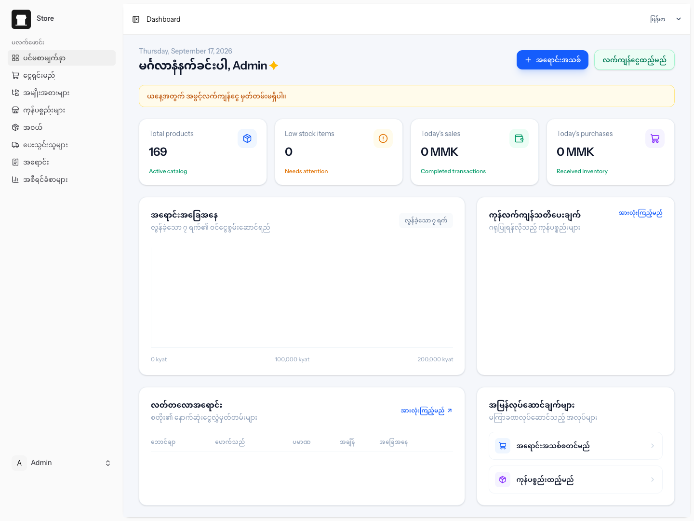
Dashboard တွင် အောက်ပါအချက်များကို ကြည့်နိုင်ပါသည်။
အဖွင့်လက်ကျန်ငွေထည့်မည် ကို နှိပ်၍ နေ့စဉ်စတင်ငွေကို
မှတ်တမ်းတင်နိုင်ပါသည်။ အရောင်းအသစ် ကို နှိပ်၍ Checkout
စာမျက်နှာသို့ တိုက်ရိုက်သွားနိုင်ပါသည်။
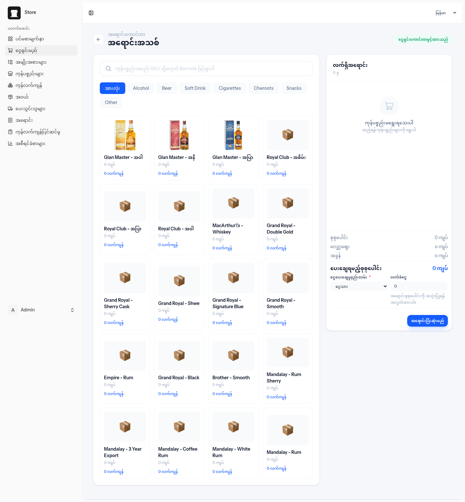
+ နှင့် - ဖြင့် အရေအတွက်ပြင်ပါ။အရောင်းပြီးဆုံးမည် ကို နှိပ်ပါ။
Barcode သို့မဟုတ် SKU ကို ရိုက်ပြီး Enter နှိပ်လျှင်လည်း
ကုန်ပစ္စည်းထည့်နိုင်ပါသည်။ F2 သည် Search box ကို focus
လုပ်ပေးပြီး F8 သည် အရောင်းပြီးဆုံးစေပါသည်။
အရောင်းအောင်မြင်ပြီးလျှင် Cart ကို အလိုအလျောက်ရှင်းပြီး အရောင်းအသေးစိတ်စာမျက်နှာသို့ သွားပါမည်။
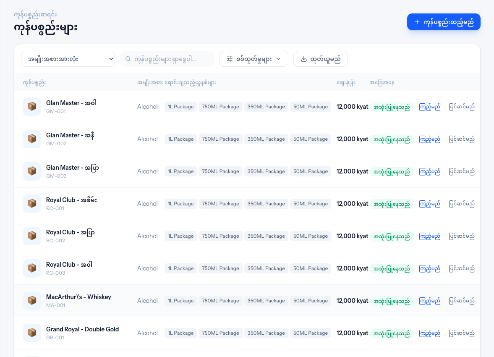
ကုန်ပစ္စည်းစာရင်းတွင် အမည်/SKU ရှာခြင်း၊ Category စစ်ထုတ်ခြင်း၊ လက်ကျန်နည်းသောပစ္စည်းများသာ ကြည့်ခြင်း၊ CSV ထုတ်ယူခြင်းနှင့် စာမျက်နှာခွဲကြည့်ခြင်းတို့ ပြုလုပ်နိုင်ပါသည်။
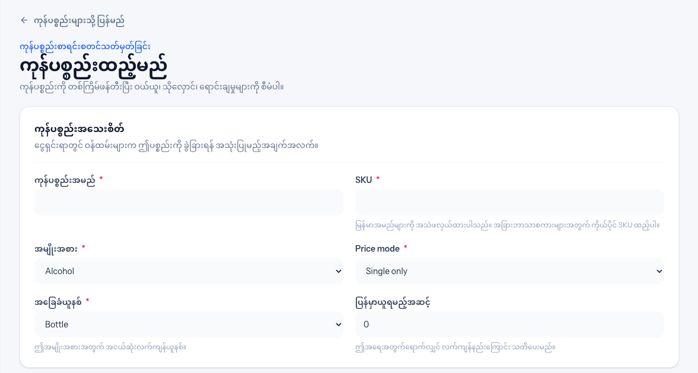
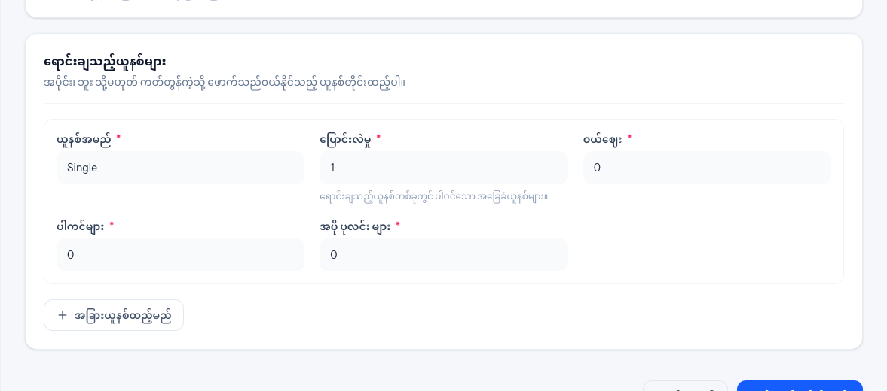
ကုန်ပစ္စည်းထည့်မည် ကို နှိပ်ပါ။ကုန်ပစ္စည်းဖန်တီးမည် ကို နှိပ်ပါ။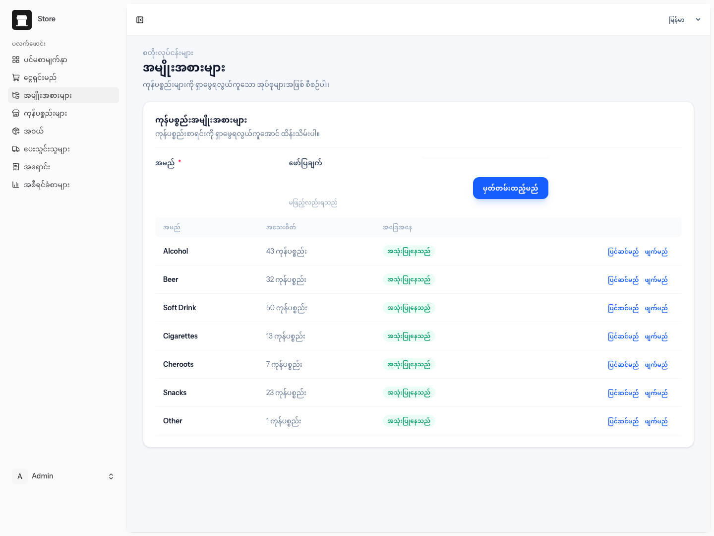
ထည့်မည် ကို နှိပ်ပါ။ပြင်ဆင်မည် ဖြင့် ပြင်ပါ။
ထို Category တွင် ကုန်ပစ္စည်းများရှိနေပါက ဖျက်၍မရနိုင်ပါ။
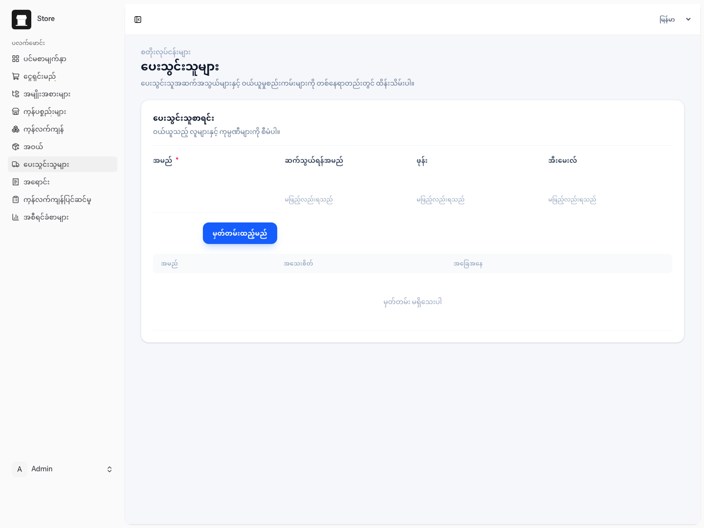
ပေးသွင်းသူအမည်၊ ဆက်သွယ်ရန်အမည်၊ ဖုန်း၊ Email နှင့် လိပ်စာကို ထည့်သွင်း/ပြင်ဆင်နိုင်ပါသည်။ မသုံးတော့သော ပေးသွင်းသူကို Archive ပြုလုပ်နိုင်ပါသည်။
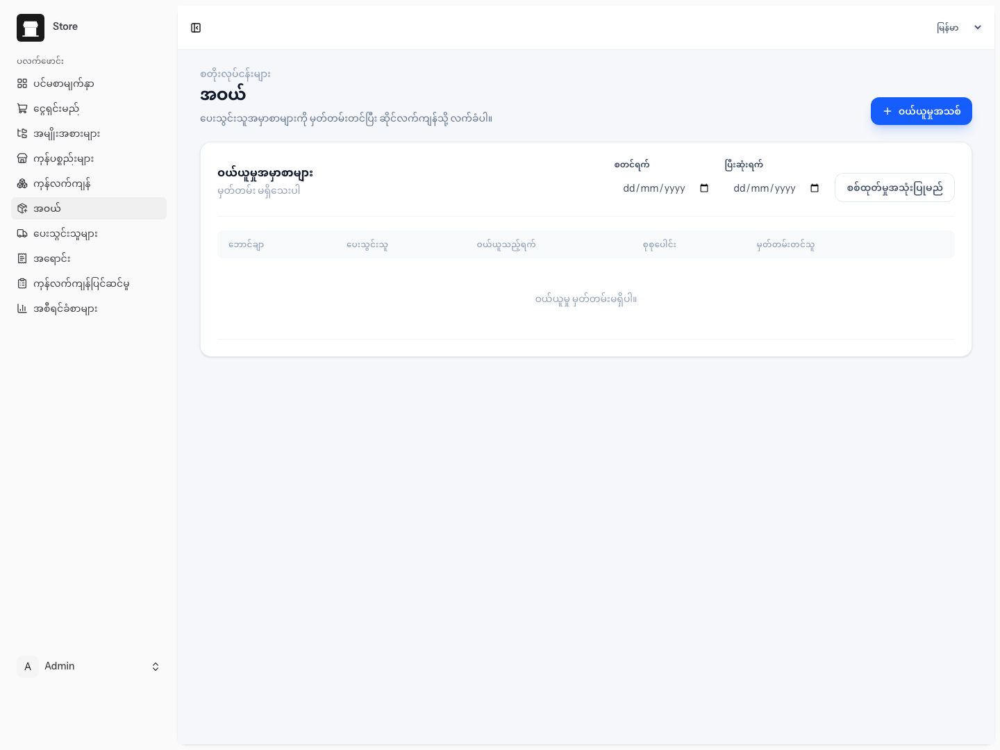
အဝယ်စာရင်းတွင် စတင်ရက်နှင့် ပြီးဆုံးရက်ရွေးပြီး အချိန်အပိုင်းအခြားအလိုက် စစ်ထုတ်နိုင်ပါသည်။ Invoice ကို နှိပ်၍ အဝယ်အသေးစိတ်ကြည့်နိုင်ပါသည်။
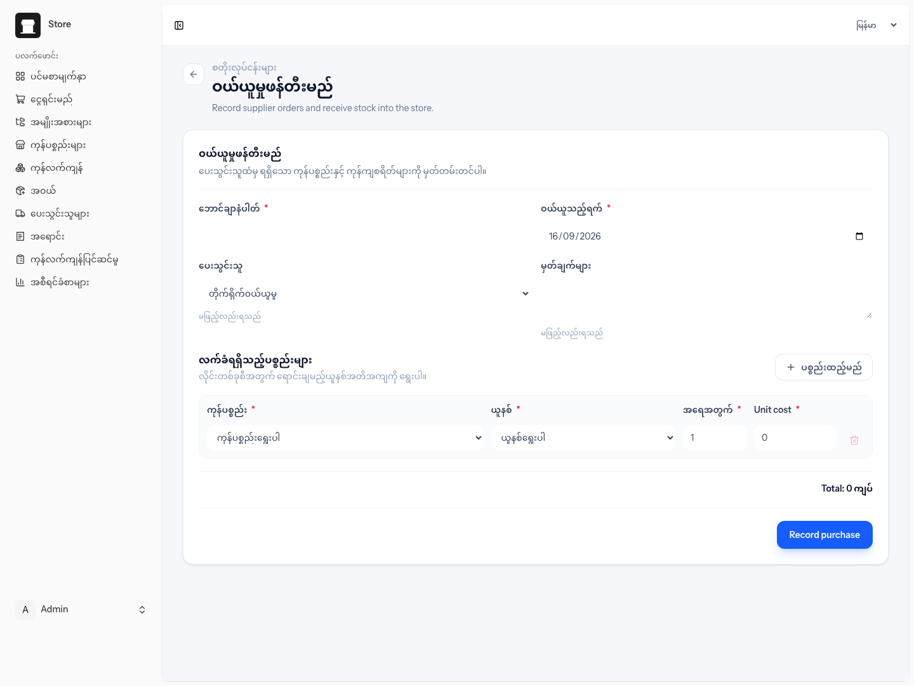
အဝယ်သိမ်းပြီးလျှင် Stock သည် အလိုအလျောက် တိုးလာပါမည်။
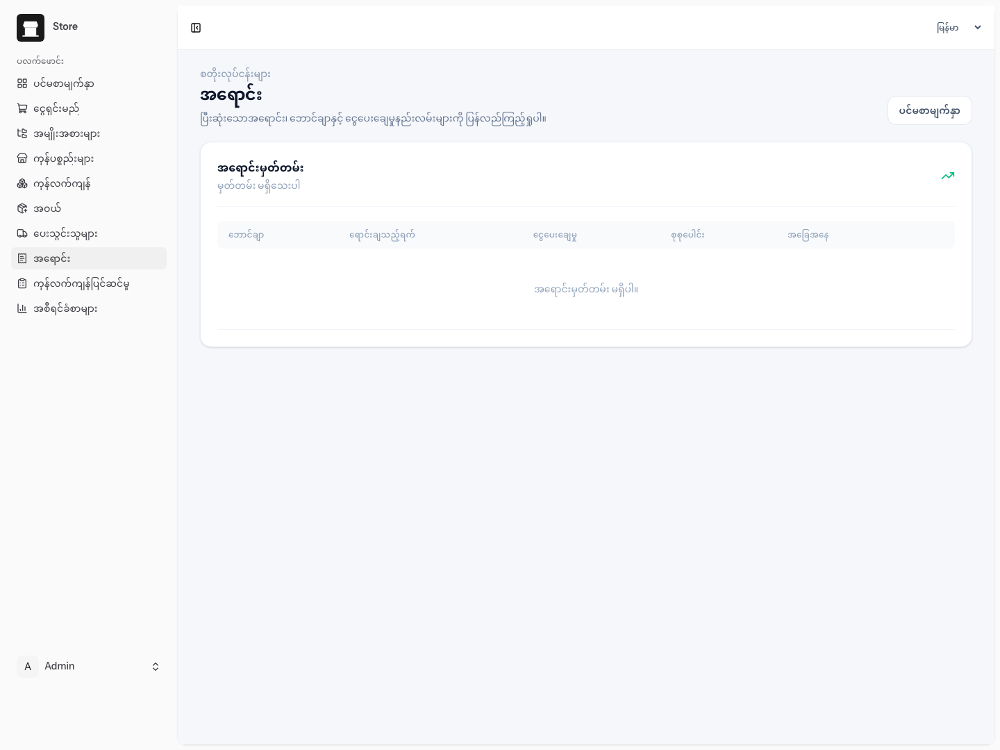
အရောင်းစာရင်းတွင် Invoice၊ ရောင်းချသည့်ရက်၊ Payment method၊ စုစုပေါင်းနှင့် အခြေအနေကို ကြည့်နိုင်ပါသည်။ Invoice ကို နှိပ်၍ အသေးစိတ်ကြည့်ပြီး Receipt ကို ပုံနှိပ်နိုင်ပါသည်။
Completed အရောင်းတွင် Add items ကို နှိပ်၍ မူလ Invoice
ထဲသို့ ပစ္စည်းထပ်ပေါင်းနိုင်ပါသည်။ ထပ်ထည့်သည့်ပစ္စည်းအတွက်သာ
ငွေပမာဏနှင့် Stock ကို ပြန်လည်တွက်ချက်ပါမည်။ Invoice နံပါတ်နှင့်
မူလအရောင်းမှတ်တမ်းကို မပြောင်းလဲပါ။
မလိုလားအပ်သော အရောင်းကို အကြောင်းပြချက်ထည့်၍ Cancel ပြုလုပ်နိုင်ပါသည်။ Cancel ပြုလုပ်လျှင် သက်ဆိုင်ရာ Stock ပြန်တိုးပေးပါမည်။
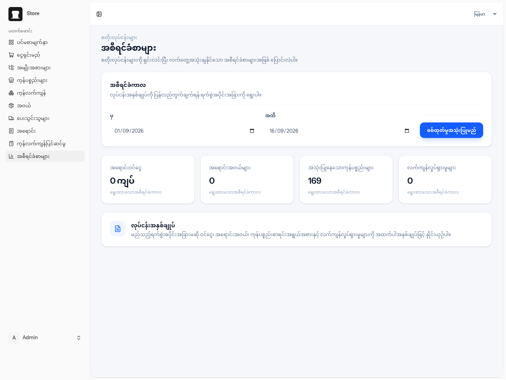
From နှင့် To ရက်စွဲရွေးပြီး စစ်ထုတ်မည် ကို နှိပ်ပါ။
ရွေးချယ်ထားသော အချိန်အပိုင်းအခြားအတွက် အောက်ပါအချက်များကို ပြသပါမည်။
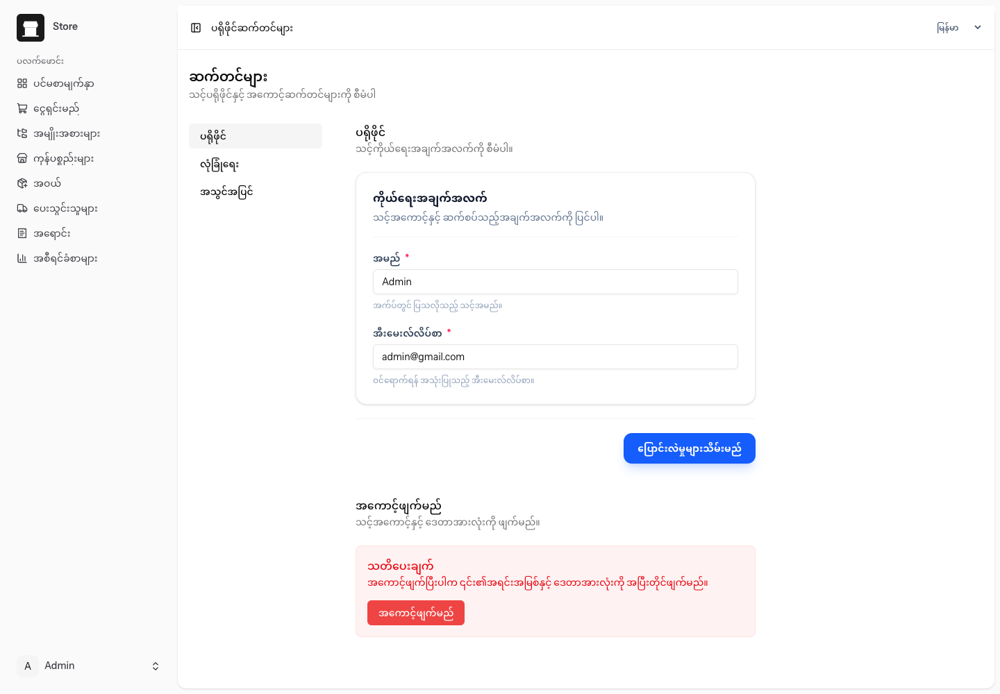
အမည်နှင့် Email ကို ပြင်ပြီး သိမ်းနိုင်ပါသည်။
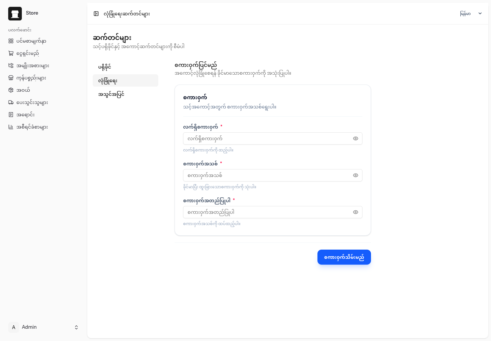
လက်ရှိ Password အတည်ပြုပြီး Password အသစ်ပြောင်းနိုင်ပါသည်။
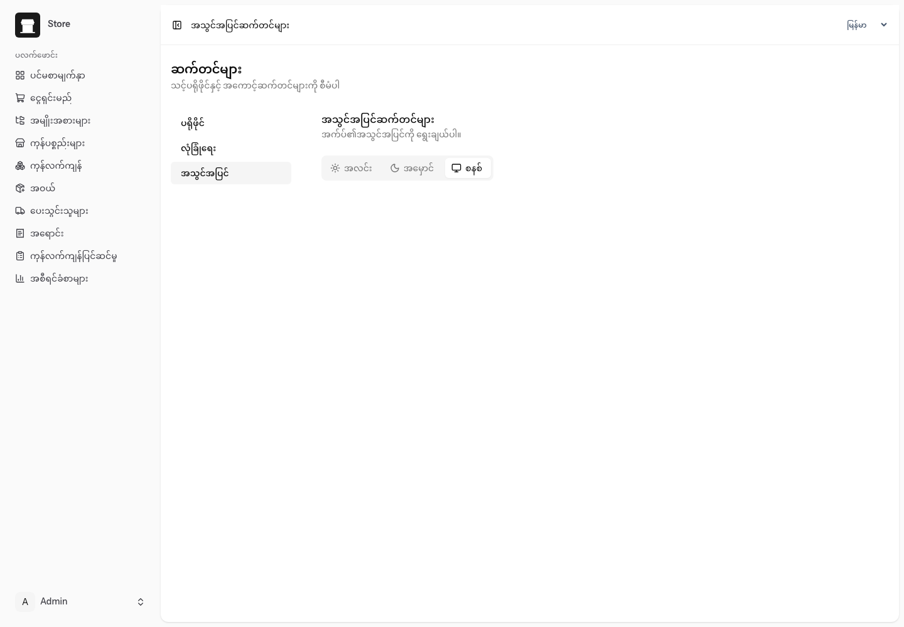
Light၊ Dark သို့မဟုတ် System theme ကို ရွေးနိုင်ပါသည်။
| လုပ်ဆောင်ချက် | Admin | Manager | Cashier |
|---|---|---|---|
| Dashboard၊ Checkout၊ Sales ကြည့်ခြင်း | ရ | ရ | ရ |
| Product ထည့်/ပြင်/Archive | ရ | ရ | မရ |
| Category နှင့် Supplier စီမံခြင်း | ရ | ရ | မရ |
| Purchase နှင့် Inventory စီမံခြင်း | ရ | ရ | မရ |
| Reports ကြည့်ခြင်း | ရ | ရ | မရ |
| Sale Cancel | ရ | ရ | မရ |
| Sale Add items | ရ | ရ | ရ |
Cashier အတွက် လိုအပ်သော Checkout နှင့် Sales လုပ်ငန်းများကိုသာ အသုံးပြုနိုင်အောင် ကန့်သတ်ထားပါသည်။